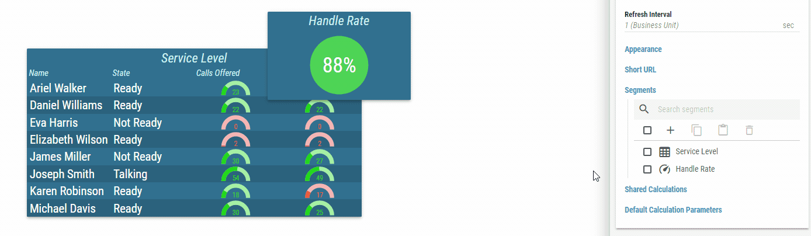

Editing a Segment¶
Layout Segment is the most essential part of the Layout. Segments display a specific type of data, depending on its type. Every Segment can be individually positioned and styled.
Options of a Segment can be accessed also by clicking on a segment in the Layout preview. A selected Segment is highlighted in the Layout preview with an orange glow.
Figure 1: Selected segment
- Type
Required
Determines, what type of data is displayed by the Segment.After the type of a Segment is selected, a second section is displayed. This section contains all options related to the selected type.
- Title
Title of the Segment used in the Layout preview and also in the Segment list.
- Appearance
The style of the Segment.
- Corner Radius
Inheritable
Corner radius of the segment can be adjusted with a slider or a text field for a custom value. Measured in permilles of the entire Layout’s height.
- Margin
Inheritable
Margin of the segment can be adjusted with a slider or a text field for a custom value. Measured in permilles of the entire Layout’s height.
- Shadow
Inheritable
For more information see Shadow Style section.
Shadow of the segment.
- Transparency
Inheritable
Transparency of the segment, measured in percents, can be adjusted with a slider or a text field for a custom value.
- Borders
Inheritable
For more information see Borders Style section.
The style, width and color settings for the segments borders.
- Position and Size
Coordinates and size of the Segment. All fields are measured in percents of the Layout’s size and number of snapping points. The Segment don’t have to be fully contained in the Layout. That means that not every coordinate field needs to contain a value between 0 and 100 or be in the range of snapping points.
- Top
Top boundary of the segment.
- Left
Left boundary of the segment.
- Height
Height of the segment.
- Width
Width of the segment.
- Lock Aspect Ratio
Whether aspect ratio of the source should be locked. For Image source, aspect ratio is locked by default. For Nested Layout and Nested Widget, aspect ratio is locked by default only in case if the parent Layout/Widget has aspect ratio different than UNLOCKED.
- Native Aspect Ratio
Available only for “Image”, “Nested Layout” and “Nested Widget” sources.
Native aspect ratio of the source. This is only informative field. Native aspect ratio can be restored by clicking on the “Restore Native Aspect Ratio” button.
- Title and Paging Info
Settings for the title and paging info.
- Visibility
Inheritable
Whether the title should be visible.
- Content
Inheritable
Content of the title.
Available options are Title, Paging Info and Title and Paging Info
- Position
Inheritable
Position of the title. If Float on Top or Float on Bottom is selected, title floats over the segment which may cause overlapping.
Available options are Float on Top, Float on Bottom, Top and Bottom
- Height
Inheritable
Height of the title, that is measured in permilles of the entire Layout’s height.
- Text Color
Inheritable
For more information see Color Field section.
Color of the text.
- Background Color
Inheritable
For more information see Color Field section.
Color of the background.
- Text Style
Inheritable
For more information see Text Style section.
Type of font to use and whether bold or italic text should be used.
- Font Size Coefficient
Inheritable
The font size is calculated by multiplying available height for the text by font size coefficient.
- Horizontal Alignment
Inheritable
Position of the text on horizontal axis.
Available options are Left, Center and Right
- Padding
Available only if “Left” or “Right” is selected as horizontal alignment.
Inheritable
The size of a padding between the Title text and Title’s border in “em” units. 1 em equals to the font size of the associated text.
The padding is applied to the side where the text is horizontally aligned.
- Render as Link
Renders the title as a hyperlink to another layout. The targeted layout opens in a new tab.
- Text Style
Inheritable
For more information see Text Style section.
Type of font to use and whether bold, italic or underlined text should be used.
- Layout
A targeted layout, that the user is navigated into after clicking on the title.
- Query String Parameters
Parameters, that will be added to the targeted layouts URL. Parameters are used for passing values to dynamic filters in grid like sources. For more information about dynamic filters and URL parameters, see Filtering using URL parameters chapter.
- Name
Name of the query string parameter.
- Value
Value of the parameter.
If multiple Segments are overlapping, the order is determined by their order in the Layout list. This order can be manually changed, by dragging an item in the list.
Figure 2: Segments overlapping
